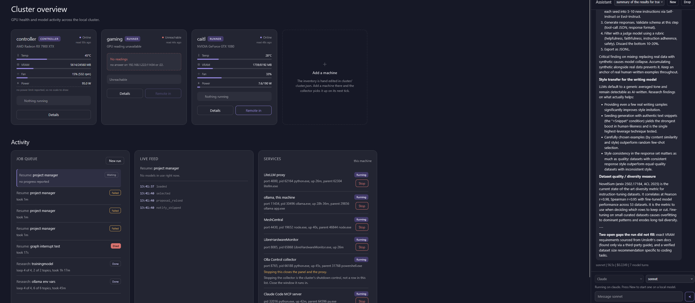

PMP-certified software engineer with eight years of experience building software. Developed and showcased a VR edtech tool created in Unreal engine 4 and WordPress. Built and integrated multiple WordPress ecommerce sites to a custom inventory management software using REST, .NET, and SQL. Now I am applying that background to agentic tooling. Working on projects utilizing Claude and local models.
I'm a Mississippi State University graduate with a Bachelor's in Software Engineering, where I also co-led the Advanced Driver Assistance Systems (A.D.A.S.) team for the 2018 EcoCar competition. After graduating, I founded ClasScape, a VR assessment tool built in Unreal Engine 4 and WordPress. This led me to complete Lobaki's XR Academy in 2019 to deepen my virtual and augmented reality development experience.
For six years I worked as a remote developer for Most Electric, an electronic-component distributor, where I managed four WordPress e-commerce sites I built. I also maintained, optimized, and extended a custom .NET inventory management system. I used REST APIs to pull orders from the WordPress sites and update products. I also handled on-site IT and ran the full software procurement cycle, from sourcing demos and quotes through purchasing, deployment, and training employees across worksites.
That role ended in June 2026 when All Current acquired Most Electric. I'm now an IT Specialist at All Current, facilitating the migration of Most's data, accounts, and software.
Joined All Current following its acquisition of Most Electric, contributing to the technical merge of the two companies' systems while keeping Most Electric's software running through the transition.
Migrating Most Electric's corporate accounts, software, and data into All Current's systems.
Integrated AWS Simple Email Service into the custom inventory management system and built SQL scripts for advanced reporting.
Facilitating meetings, knowledge transfers, and equipment installs across the newly acquired locations.
Primary developer for the company's web and internal software. Working on application development, websites, infrastructure, and IT.
Maintained, debuged, and extended a custom inventory management system built on .NET. Built REST API integrations in VB.NET to pull orders from the WordPress sites and update products. Created and manages four WordPress e-commerce sites.
Set up and managed hosting on Azure and Google VMs. Handles DNS, SSL certificates, and domain administration.
Ran the full software procurement cycle: sourcing demos and quotes, comparing options, purchasing, deploying, and training employees across worksites on new tools.
Lead a 20-person volunteer team to a competitive objective through structured planning and execution.
Facilitate meetings, retrospectives, and one-on-one feedback to drive improvement.
Analyze performance data to identify gaps then implementing corrective actions.
Implement real-time contingency plans that reallocate roles under pressure to keep objectives on track.
Resolve conflicts and coordinate resources, across a volunteer roster.
An agent that decides which abandoned ticket carts deserve an offer and what to offer. Created for a Provn.com challenge.
Fans abandon carts daily and nobody follows up. The brief: an agent that decides which stale carts deserve a win-back offer, proposes one with a reason, and puts it in front of a marketer to approve, edit, or reject. Full brief →
Two versions of the agent were built in LangGraph. Version 1 has 6 nodes and only used the data provided by the challenge. Version 2 has 10 nodes and fabricated reasonable data a real system could have access to.
The agents never went through any form of tuning. This is a proof of concept. And a full review of all AI-generated content hasn't been done. The challenge expected the demo to have AI content.
Three machines serve local models on a network. A panel shows the status of the cluster: GPU health per machine, the job queue, a live event feed per run, and start/stop control for every service on the controller. A Claude workflow can outsource work to agents on the local network using MCP tools.

LangChain provides a framework for building the agentic harness the system runs on. Managing tool calls, context summarization, and agent memory.
One provisioning script installs and joins each machine to the controller. Runners are configured to only take instructions from the controller and within the local network.
Exposed through an MCP server so any Claude session on the controller can reach the agents.
An education-technology venture I founded and led. From a concept to a funded, tested prototype.
ClasScape was a gamification tool for student assessment, built for VR, PC, and Mac. Teachers would create quizzes through a web interface; those questions appeared inside a game, and students earned a short gameplay session afterward, with rewards tied to their performance. The goal was to raise student engagement and retention without adding work for teachers.
Founder and Entrepreneurial Lead. I led a small team and worked with mentors throughout the lifetime of the company. I built the VR assessment demo using Unreal Engine 4 and WordPress. I wrote grants, presented to investors, ran school demonstrations, and performed market research.
A functional VR demo, tested in multiple schools and shown at the Innovate MS Accelerate conference. Multiple grants and awards received to fund the project. Product market fit determined through extensive market research.
The COVID-19 pandemic in early 2020 disrupted in-person school demonstrations and investor confidence. Investor engagement and grant-supported pilot deployments were significantly impacted by this. The startup was unable to sustain momentum, leading to it winding down by January 2022.